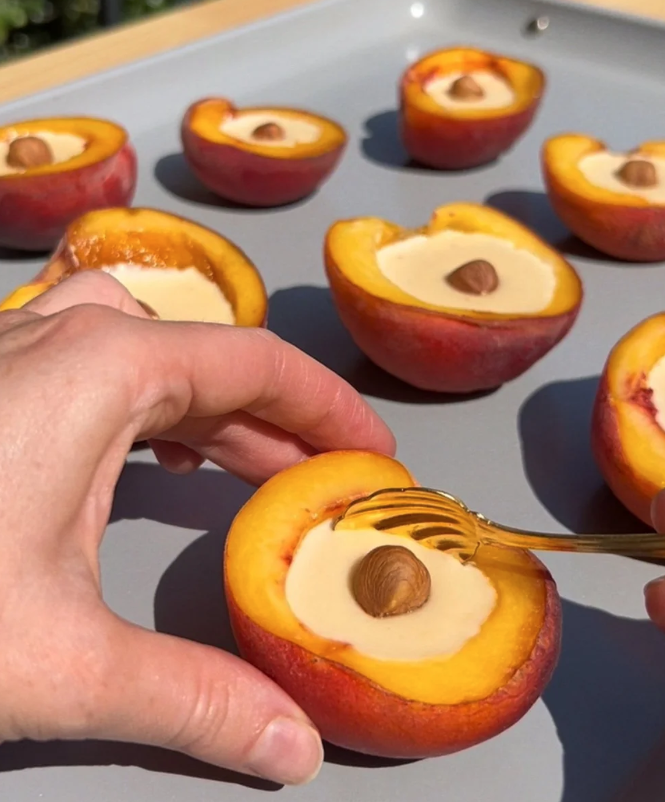

Home
Peach Possets

Peach possets have a silky, custard-like filling, rich and creamy with a bright, citrusy lemon note. Nestled inside fresh ripe peach halves, each bite combines the luscious smoothness of the posset with juicy, tender peach for a dessert that’s light, refreshing, and intensely peachy.
Ingredients
- 4 large ripe peaches
- 2 teaspoons fresh lemon juice
- 3/4 cup heavy cream
- 1/3 cup white sugar
- fresh mint leaves
Steps
- Halve peaches lengthwise and remove pits. Using a melon baller or a small spoon, scoop flesh from peach halves, leaving about 1/4-inch-thick sides intact. Brush cut surfaces and hollowed-out centers with 1 teaspoon of the lemon juice to prevent browning. Process reserved peach flesh and 1 teaspoon of the lemon juice in a food processor until smooth. Pour peach purée through a fine-mesh strainer into a small bowl; discard solids. Measure 5 tablespoons of peach purée, reserving remaining purée for another use. Arrange peach halves, cut side up, on a plate; set aside.
- Stir together heavy cream and sugar in a small saucepan over medium. Bring to a simmer over medium heat, stirring occasionally, until sugar dissolves. Reduce heat to medium-low, and gently simmer, stirring occasionally, until slightly reduced, about 3 minutes.
- Remove cream mixture from heat. Stir 5 tablespoons peach purée and remaining 1 tablespoon lemon juice into cream mixture. Pour mixture evenly among prepared peach halves, about 2 tablespoons per peach half, filling each almost to the top.
- Chill, uncovered, until set, at least 3 hours. If chilling longer than 4 hours, cover plate tightly with plastic wrap after 4 hours, or transfer peach halves to an airtight container. Garnish with fresh mint leaves before serving.